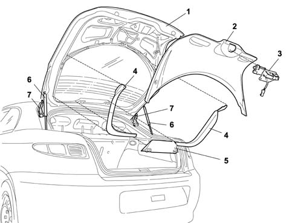

INTRODUCTION - TAILGATE/
- Path
- Descriptions > 70 FITTINGS > 7015 TAILGATE/FLAP > INTRODUCTION - TAILGATE/
- Kind
- system description
- Applies to
- engines: 2.0 JTS, 3.2 V6, 1.9 JTD 16V; all production periods
- Interactive page
- https://sloeber94.github.io/elrnDB-aGt/en/#/125000428
Applies to: engines: 2.0 JTS, 3.2 V6, 1.9 JTD 16V; all production periods
SPECIFICATIONS
The tailgate is manufactured using conventional pressing processes and includes large window bonded flush with the tailgate. The edges that overlap the structure are screen-printed in black. The window features a demisting circuit that also includes the area around the third brake light.
The tail-gate can be opened:
- by using the button in the centre of the dashboard;
- by remote control, via a button on the ignition key.
The tail-gate is held in position by two gas struts.
COMPOSITION
View of tail-gate components

1 - Tailgate
2 - Interior trim
3 - Tailgate lock
4 - Side/top trim
5 - Third brake light
6 - Telescopic strut
7 - Tailgate hinge